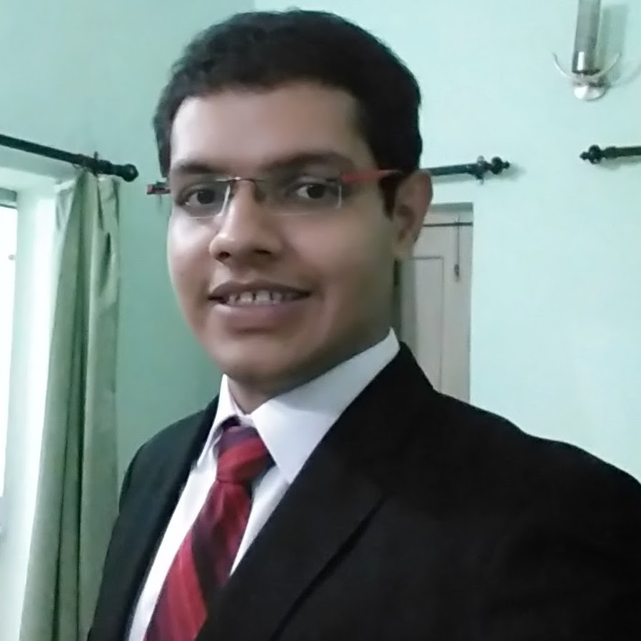
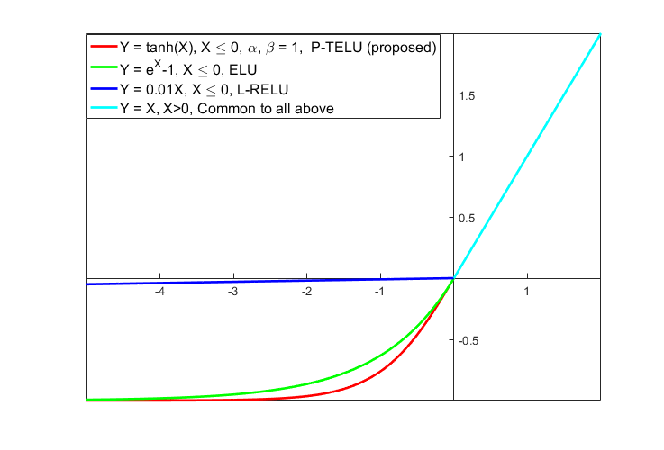
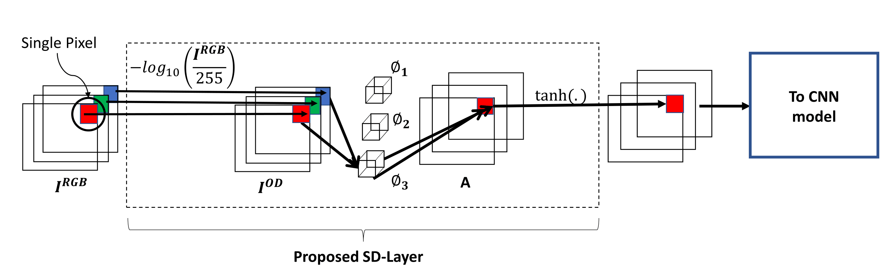
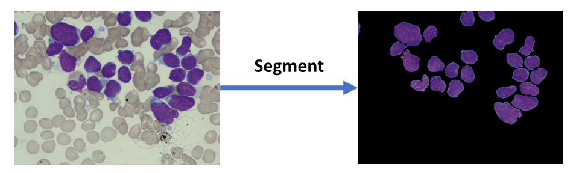

|
Rahul Duggal
I am a Ph.D. student of Computer Science in the College of Computing at Georgia Institute of Technology. I work in Prof. Jimeng Sun's group as a Graduate Research Assistant.
Previously, I was a Software Developer at Epic Systems in Verona, WI. As part of the OpTime team, I helped build software for surgery time workflows. Prior to this, I worked in the area of Medical Imaging with SBILab as a Research Assistant.
My journey in the world of CS started off at Netaji Subhas Institute of Technology, Delhi, where I spent 4 wonderful years as an undergrad.
Github /
Google Scholar /
Email /
CV
|

|
|
Research
My interests lie at the intersection of computer science and healthcare. Specifically, I'm excited about developing solutions to impactful problems in medical imaging, healthcare analytics using deep learning.
|
-
[Aug '18] - Started as a Ph.D. computer science student at Georgia Tech.
-
[Oct '17] - Started as a Software Developer at Epic Systems, USA.
-
[Oct '17] - Poster presented at ICCV Workshops 2017, Venice, Italy.
-
[Sep '17] - Paper presented at MICCAI 2017, Quebec City, Canada.
|

|
P-TELU : Parametric Tan Hyperbolic Linear Unit Activation for Deep Neural Networks
Rahul Duggal,
Anubha Gupta
International Conference of Computer Vision Workshops (ICCVW), 2017, Venice, Italy
Paper /
Poster
P-TELU is a paramterized activation function that can be used in any CNN model.
|
|

|
SD-Layer: Stain Deconvolutional layer for CNNs in Medical Microscopic Imaging
Rahul Duggal,
Anubha Gupta,
Ritu Gupta, Pramit Mallick
Medical Image Computing and Computer Assisted Intervention (MICCAI), 2017, Quebec City, Canada
Paper /
Code /
Poster
SD-Layer is a medically aware CNN layer that can be pre appended to any CNN model trained on medical images in order to increase its accuracy.
|
|

|
Overlapping Cell Nuclei Segmentation in Microscopic Images Using Deep Belief Networks
Rahul Duggal,
Anubha Gupta,
Ritu Gupta, Manya Wadhwa, Chirag Ahuja
Indian Conference on Computer Vision, Graphics and Image Processing (ICVGIP), 2016, India
Paper /
Code /
Poster
Pipeline to accurately segment individual nuclei in ALL biopsy images.
|
|